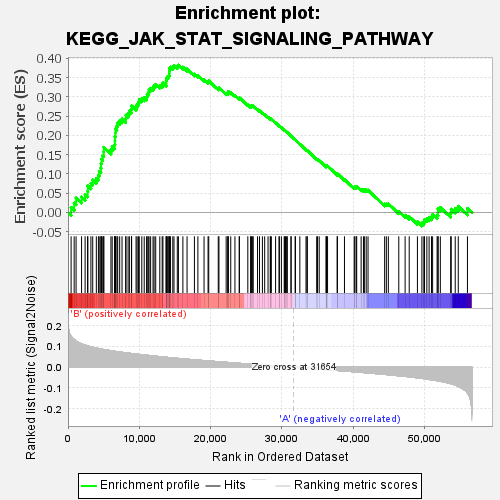
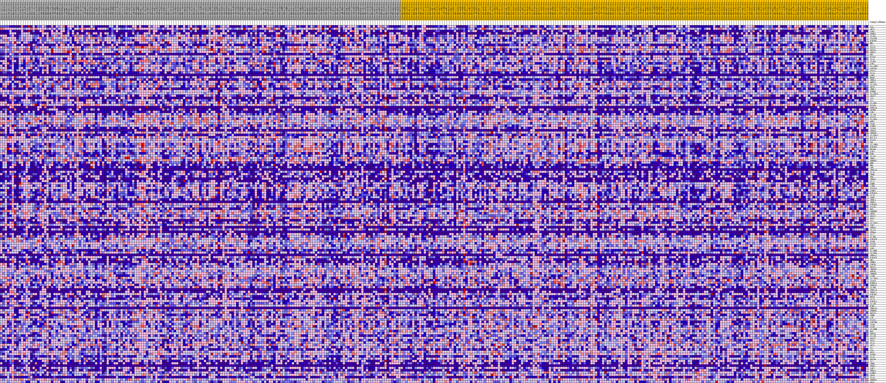
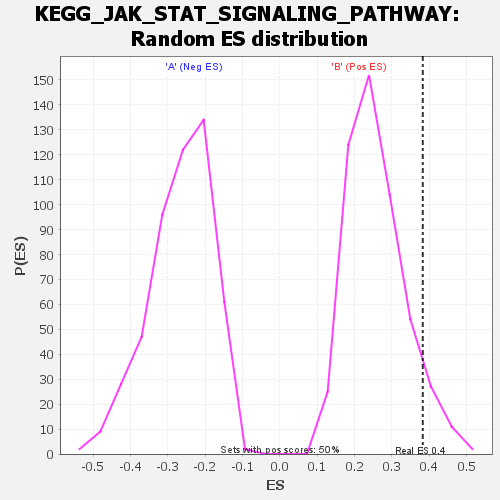

| | | Dataset | my.my.cls#B_versus_A.my.cls#B_versus_A_repos |
| Phenotype | my.cls#B_versus_A_repos |
| Upregulated in class | B |
| GeneSet | KEGG_JAK_STAT_SIGNALING_PATHWAY |
| Enrichment Score (ES) | 0.3827177 |
| Normalized Enrichment Score (NES) | 1.4841262 |
| Nominal p-value | 0.07014028 |
| FDR q-value | 0.7895998 |
| FWER p-Value | 0.785 |
Table: GSEA Results Summary

Fig 1: Enrichment plot: KEGG_JAK_STAT_SIGNALING_PATHWAY
Profile of the Running ES Score & Positions of GeneSet Members on the Rank Ordered List
| SYMBOL | TITLE | RANK IN GENE LIST | RANK METRIC SCORE | RUNNING ES | CORE ENRICHMENT | | 1 | IL6 | na | 434 | 0.148 | 0.0133 | Yes |
| 2 | AKT2 | na | 864 | 0.133 | 0.0246 | Yes |
| 3 | CSF3 | na | 1133 | 0.127 | 0.0378 | Yes |
| 4 | IFNW1 | na | 1902 | 0.113 | 0.0402 | Yes |
| 5 | IL2RA | na | 2399 | 0.107 | 0.0465 | Yes |
| 6 | STAT5B | na | 2752 | 0.103 | 0.0548 | Yes |
| 7 | PIK3R1 | na | 2777 | 0.103 | 0.0689 | Yes |
| 8 | MPL | na | 3212 | 0.099 | 0.0752 | Yes |
| 9 | IL11 | na | 3465 | 0.097 | 0.0844 | Yes |
| 10 | STAT2 | na | 3972 | 0.093 | 0.0885 | Yes |
| 11 | SOCS5 | na | 4262 | 0.090 | 0.0962 | Yes |
| 12 | SPRY1 | na | 4374 | 0.090 | 0.1069 | Yes |
| 13 | GH2 | na | 4608 | 0.088 | 0.1153 | Yes |
| 14 | PIAS2 | na | 4632 | 0.088 | 0.1273 | Yes |
| 15 | IL13 | na | 4710 | 0.087 | 0.1383 | Yes |
| 16 | IL3RA | na | 4876 | 0.086 | 0.1476 | Yes |
| 17 | CTF1 | na | 5010 | 0.086 | 0.1574 | Yes |
| 18 | IL12RB2 | na | 5015 | 0.086 | 0.1694 | Yes |
| 19 | CSF2RA | na | 6021 | 0.080 | 0.1629 | Yes |
| 20 | STAT1 | na | 6195 | 0.079 | 0.1710 | Yes |
| 21 | IL24 | na | 6534 | 0.077 | 0.1759 | Yes |
| 22 | CSH1 | na | 6577 | 0.077 | 0.1860 | Yes |
| 23 | EPOR | na | 6581 | 0.077 | 0.1968 | Yes |
| 24 | IFNL3 | na | 6659 | 0.076 | 0.2063 | Yes |
| 25 | SPRY2 | na | 6662 | 0.076 | 0.2170 | Yes |
| 26 | IL11RA | na | 6854 | 0.075 | 0.2243 | Yes |
| 27 | AKT3 | na | 6968 | 0.075 | 0.2329 | Yes |
| 28 | IFNL2 | na | 7246 | 0.074 | 0.2384 | Yes |
| 29 | PTPN6 | na | 7578 | 0.072 | 0.2428 | Yes |
| 30 | IL13RA1 | na | 8087 | 0.070 | 0.2436 | Yes |
| 31 | CRLF2 | na | 8130 | 0.070 | 0.2528 | Yes |
| 32 | IL9 | na | 8425 | 0.068 | 0.2572 | Yes |
| 33 | IL5 | na | 8608 | 0.068 | 0.2636 | Yes |
| 34 | IL10RA | na | 8898 | 0.066 | 0.2678 | Yes |
| 35 | PIAS4 | na | 8921 | 0.066 | 0.2768 | Yes |
| 36 | IFNA14 | na | 9544 | 0.064 | 0.2748 | Yes |
| 37 | CNTFR | na | 9689 | 0.063 | 0.2812 | Yes |
| 38 | CSF2 | na | 9877 | 0.062 | 0.2867 | Yes |
| 39 | IL21R | na | 9990 | 0.062 | 0.2934 | Yes |
| 40 | STAT3 | na | 10349 | 0.060 | 0.2956 | Yes |
| 41 | IL15RA | na | 10686 | 0.059 | 0.2980 | Yes |
| 42 | GRB2 | na | 11019 | 0.058 | 0.3004 | Yes |
| 43 | IL4R | na | 11100 | 0.058 | 0.3071 | Yes |
| 44 | CCND1 | na | 11255 | 0.057 | 0.3125 | Yes |
| 45 | IL5RA | na | 11368 | 0.057 | 0.3185 | Yes |
| 46 | IFNA8 | na | 11585 | 0.056 | 0.3226 | Yes |
| 47 | IFNAR2 | na | 11924 | 0.055 | 0.3243 | Yes |
| 48 | IL13RA2 | na | 12071 | 0.054 | 0.3294 | Yes |
| 49 | BCL2L1 | na | 12299 | 0.053 | 0.3329 | Yes |
| 50 | PIAS3 | na | 12872 | 0.051 | 0.3300 | Yes |
| 51 | CBL | na | 13204 | 0.050 | 0.3312 | Yes |
| 52 | IL12RB1 | na | 13310 | 0.050 | 0.3364 | Yes |
| 53 | PIK3R5 | na | 13767 | 0.048 | 0.3351 | Yes |
| 54 | EP300 | na | 13769 | 0.048 | 0.3418 | Yes |
| 55 | JAK3 | na | 13801 | 0.048 | 0.3481 | Yes |
| 56 | OSM | na | 13934 | 0.047 | 0.3524 | Yes |
| 57 | IL23A | na | 14129 | 0.047 | 0.3556 | Yes |
| 58 | IRF9 | na | 14201 | 0.046 | 0.3609 | Yes |
| 59 | SPRED1 | na | 14208 | 0.046 | 0.3674 | Yes |
| 60 | GHR | na | 14216 | 0.046 | 0.3738 | Yes |
| 61 | PRL | na | 14378 | 0.046 | 0.3775 | Yes |
| 62 | LEP | na | 14695 | 0.045 | 0.3783 | Yes |
| 63 | IFNA16 | na | 14861 | 0.044 | 0.3816 | Yes |
| 64 | IL26 | na | 15324 | 0.043 | 0.3795 | Yes |
| 65 | IFNG | na | 15482 | 0.042 | 0.3827 | Yes |
| 66 | TPO | na | 16109 | 0.041 | 0.3774 | No |
| 67 | IFNA5 | na | 16693 | 0.039 | 0.3725 | No |
| 68 | IL22 | na | 17725 | 0.036 | 0.3594 | No |
| 69 | OSMR | na | 18213 | 0.035 | 0.3556 | No |
| 70 | LIFR | na | 19077 | 0.032 | 0.3449 | No |
| 71 | STAT5A | na | 19640 | 0.031 | 0.3392 | No |
| 72 | CCND2 | na | 19735 | 0.030 | 0.3419 | No |
| 73 | PIK3CG | na | 21068 | 0.027 | 0.3220 | No |
| 74 | IL7R | na | 21164 | 0.026 | 0.3241 | No |
| 75 | LEPR | na | 22177 | 0.024 | 0.3095 | No |
| 76 | IFNL1 | na | 22403 | 0.023 | 0.3088 | No |
| 77 | IFNA2 | na | 22431 | 0.023 | 0.3116 | No |
| 78 | PIK3R3 | na | 22479 | 0.023 | 0.3140 | No |
| 79 | STAT4 | na | 22820 | 0.022 | 0.3111 | No |
| 80 | EPO | na | 23407 | 0.021 | 0.3037 | No |
| 81 | CREBBP | na | 24006 | 0.019 | 0.2958 | No |
| 82 | CNTF | na | 24036 | 0.019 | 0.2979 | No |
| 83 | SOCS2 | na | 25213 | 0.016 | 0.2793 | No |
| 84 | SOS1 | na | 25614 | 0.015 | 0.2744 | No |
| 85 | IL3 | na | 25642 | 0.015 | 0.2760 | No |
| 86 | IL22RA2 | na | 25716 | 0.015 | 0.2768 | No |
| 87 | TYK2 | na | 25851 | 0.014 | 0.2764 | No |
| 88 | IFNA6 | na | 25972 | 0.014 | 0.2763 | No |
| 89 | IL12A | na | 26577 | 0.012 | 0.2674 | No |
| 90 | IFNA4 | na | 26855 | 0.012 | 0.2641 | No |
| 91 | IL21 | na | 27259 | 0.011 | 0.2585 | No |
| 92 | IL2RG | na | 27577 | 0.010 | 0.2543 | No |
| 93 | PIK3CB | na | 28048 | 0.009 | 0.2472 | No |
| 94 | STAM | na | 28368 | 0.008 | 0.2427 | No |
| 95 | STAT6 | na | 28381 | 0.008 | 0.2436 | No |
| 96 | CLCF1 | na | 28511 | 0.008 | 0.2424 | No |
| 97 | JAK1 | na | 29107 | 0.006 | 0.2328 | No |
| 98 | IL20RB | na | 29591 | 0.005 | 0.2249 | No |
| 99 | IL20RA | na | 29637 | 0.005 | 0.2248 | No |
| 100 | IFNA17 | na | 29922 | 0.004 | 0.2204 | No |
| 101 | PIK3CD | na | 30315 | 0.003 | 0.2139 | No |
| 102 | GH1 | na | 30380 | 0.003 | 0.2132 | No |
| 103 | IFNB1 | na | 30493 | 0.003 | 0.2116 | No |
| 104 | CSF3R | na | 30624 | 0.002 | 0.2097 | No |
| 105 | SOCS1 | na | 30757 | 0.002 | 0.2076 | No |
| 106 | IFNAR1 | na | 31266 | 0.001 | 0.1987 | No |
| 107 | SPRY4 | na | 31284 | 0.001 | 0.1986 | No |
| 108 | IFNGR2 | na | 31848 | -0.000 | 0.1887 | No |
| 109 | CISH | na | 31892 | -0.001 | 0.1880 | No |
| 110 | IL22RA1 | na | 32507 | -0.002 | 0.1774 | No |
| 111 | IL6ST | na | 33372 | -0.004 | 0.1627 | No |
| 112 | PTPN11 | na | 33513 | -0.005 | 0.1609 | No |
| 113 | IFNLR1 | na | 33555 | -0.005 | 0.1608 | No |
| 114 | IL2RB | na | 34869 | -0.008 | 0.1387 | No |
| 115 | IFNA13 | na | 34989 | -0.008 | 0.1377 | No |
| 116 | IFNA21 | na | 35223 | -0.009 | 0.1349 | No |
| 117 | PIK3R2 | na | 36180 | -0.011 | 0.1195 | No |
| 118 | PRLR | na | 36227 | -0.011 | 0.1203 | No |
| 119 | IL20 | na | 36243 | -0.011 | 0.1217 | No |
| 120 | PIK3CA | na | 36393 | -0.012 | 0.1207 | No |
| 121 | IL23R | na | 37737 | -0.015 | 0.0991 | No |
| 122 | PIM1 | na | 37780 | -0.015 | 0.1005 | No |
| 123 | IFNA10 | na | 38765 | -0.018 | 0.0856 | No |
| 124 | IFNGR1 | na | 40122 | -0.022 | 0.0647 | No |
| 125 | SOCS3 | na | 40213 | -0.022 | 0.0662 | No |
| 126 | IFNK | na | 40406 | -0.022 | 0.0660 | No |
| 127 | LIF | na | 40480 | -0.023 | 0.0679 | No |
| 128 | PIAS1 | na | 41100 | -0.024 | 0.0603 | No |
| 129 | CSF2RB | na | 41427 | -0.025 | 0.0581 | No |
| 130 | IL6R | na | 41556 | -0.026 | 0.0595 | No |
| 131 | IL9R | na | 41810 | -0.026 | 0.0588 | No |
| 132 | IL10RB | na | 42070 | -0.027 | 0.0580 | No |
| 133 | MYC | na | 44399 | -0.034 | 0.0216 | No |
| 134 | SPRY3 | na | 44636 | -0.035 | 0.0224 | No |
| 135 | IL12B | na | 44916 | -0.036 | 0.0225 | No |
| 136 | SOCS7 | na | 46381 | -0.041 | 0.0024 | No |
| 137 | TSLP | na | 47269 | -0.044 | -0.0071 | No |
| 138 | IL15 | na | 47842 | -0.046 | -0.0107 | No |
| 139 | AKT1 | na | 48994 | -0.051 | -0.0239 | No |
| 140 | IL7 | na | 49625 | -0.053 | -0.0275 | No |
| 141 | IL4 | na | 49895 | -0.055 | -0.0245 | No |
| 142 | SOS2 | na | 49991 | -0.055 | -0.0183 | No |
| 143 | STAM2 | na | 50317 | -0.057 | -0.0161 | No |
| 144 | IL10 | na | 50632 | -0.058 | -0.0134 | No |
| 145 | SOCS4 | na | 50967 | -0.060 | -0.0108 | No |
| 146 | IL2 | na | 51126 | -0.061 | -0.0049 | No |
| 147 | IFNE | na | 51754 | -0.065 | -0.0069 | No |
| 148 | IFNA7 | na | 51876 | -0.065 | 0.0003 | No |
| 149 | JAK2 | na | 51885 | -0.066 | 0.0094 | No |
| 150 | IFNA1 | na | 52207 | -0.068 | 0.0133 | No |
| 151 | CCND3 | na | 53658 | -0.078 | -0.0013 | No |
| 152 | CBLB | na | 53730 | -0.079 | 0.0086 | No |
| 153 | IL19 | na | 54295 | -0.086 | 0.0108 | No |
| 154 | SPRED2 | na | 54722 | -0.092 | 0.0162 | No |
| 155 | CBLC | na | 56008 | -0.123 | 0.0109 | No |
Table: GSEA details [plain text format]

Fig 2: KEGG_JAK_STAT_SIGNALING_PATHWAY
Blue-Pink O' Gram in the Space of the Analyzed GeneSet

Fig 3: KEGG_JAK_STAT_SIGNALING_PATHWAY: Random ES distribution
Gene set null distribution of ES for KEGG_JAK_STAT_SIGNALING_PATHWAY